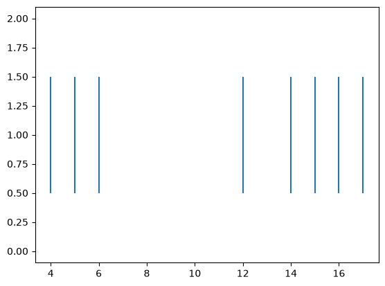
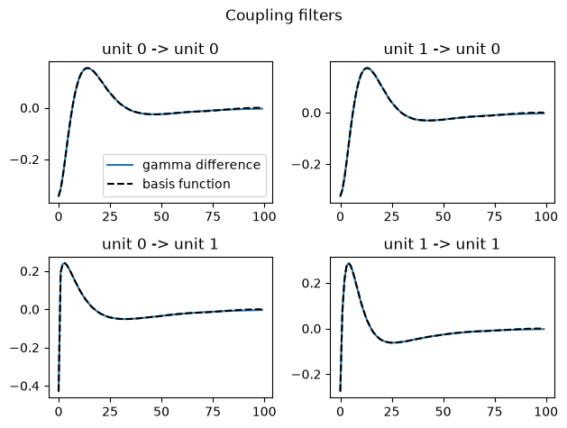
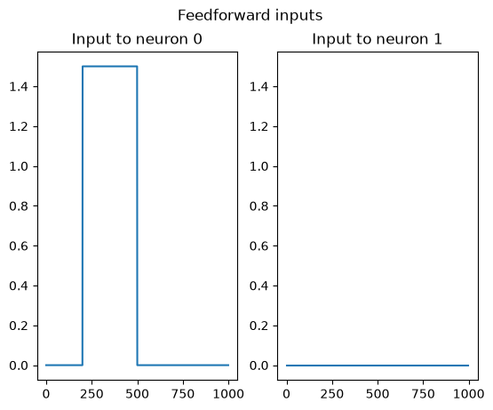
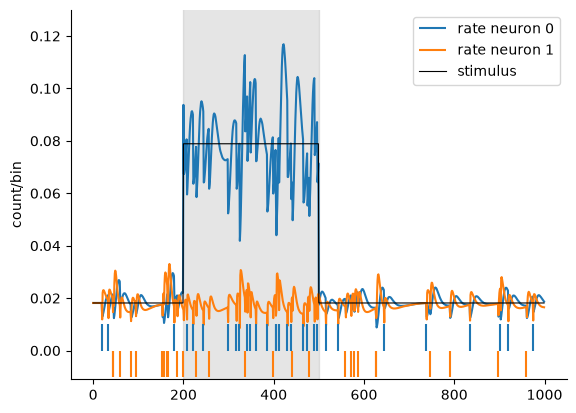

Download
Download this notebook: plot_02_glm_demo.ipynb!
GLM Demo: Toy Model Examples#
Warning
This demonstration is currently in its alpha stage. It presents various regularization techniques on GLMs trained on a Gaussian noise stimuli, and a minimal example of fitting and simulating a pair of coupled neurons. More work needs to be done to properly compare the performance of the regularization strategies on realistic simulations and real neural recordings.
Introduction#
In this demo we will work through two toy examples of a Poisson-GLM on synthetic data: a purely feed-forward input model and a recurrently coupled model.
In particular, we will learn how to:
Define & configurate a GLM object.
Fit the model
Cross-validate the model with
sklearnSimulate spike trains.
Before digging into the GLM module, let’s first import the packages we are going to use for this tutorial, and generate some synthetic data.
import jax
import matplotlib.pyplot as plt
import numpy as np
from matplotlib.patches import Rectangle
from sklearn import model_selection
import nemos as nmo
np.random.seed(111)
# random design tensor. Shape (n_time_points, n_features).
X = 0.5*np.random.normal(size=(100, 5))
# log-rates & weights, shape (1, ) and (n_features, ) respectively.
b_true = np.zeros((1, ))
w_true = np.random.normal(size=(5, ))
# sparsify weights
w_true[1:4] = 0.
# generate counts
rate = jax.numpy.exp(jax.numpy.einsum("k,tk->t", w_true, X) + b_true)
spikes = np.random.poisson(rate)
The Feed-Forward GLM#
Model Definition#
The class implementing the feed-forward GLM is nemos.glm.GLM.
In order to define the class, one must provide:
Observation Model: The observation model for the GLM, e.g. an object of the class of type
nemos.observation_models.Observations. So far, only thePoissonObservationsmodel has been implemented.Regularizer: The desired regularizer, e.g. an object of the
nemos.regularizer.Regularizerclass. Currently, we implemented the un-regularized, Ridge, Lasso, and Group-Lasso regularization.
The default for the GLM class is the PoissonObservations with log-link function with a Ridge regularization.
Here is how to define the model.
# default Poisson GLM with Ridge regularization and Poisson observation model.
model = nmo.glm.GLM()
print("Regularization type: ", type(model.regularizer))
print("Observation model:", type(model.observation_model))
Regularization type: <class 'nemos.regularizer.UnRegularized'>
Observation model: <class 'nemos.observation_models.PoissonObservations'>
Model Configuration#
One could visualize the model hyperparameters by calling get_params method.
# get the glm model parameters only
print("\nGLM model parameters:")
for key, value in model.get_params(deep=False).items():
print(f"\t- {key}: {value}")
# get the glm model parameters, including the all the
# attributes
print("\nNested parameters:")
for key, value in model.get_params(deep=True).items():
if key in model.get_params(deep=False):
continue
print(f"\t- {key}: {value}")
GLM model parameters:
- fit_intercept: True
- fix_params: (None, None)
- inverse_link_function: <function exp at 0x7fd694352fc0>
- observation_model: PoissonObservations()
- regularizer: UnRegularized()
- regularizer_strength: None
- solver_kwargs: {}
- solver_name: LBFGS
Nested parameters:
These parameters can be configured at initialization and/or set after the model is initialized with the following syntax:
# Poisson GLM with soft-plus NL
model = nmo.glm.GLM(
observation_model="Poisson",
inverse_link_function=jax.nn.softplus,
solver_name="LBFGS",
solver_kwargs={"tol":10**-10},
)
print("Regularizer type: ", type(model.regularizer))
print("Observation model:", type(model.observation_model))
Regularizer type: <class 'nemos.regularizer.UnRegularized'>
Observation model: <class 'nemos.observation_models.PoissonObservations'>
Hyperparameters can be set at any moment via the set_params method.
model.set_params(
regularizer=nmo.regularizer.Lasso(),
inverse_link_function=jax.numpy.exp
)
print("Updated regularizer: ", model.regularizer)
print("Updated NL: ", model.inverse_link_function)
Updated regularizer: Lasso()
Updated NL: <PjitFunction of <function exp at 0x7fd6cb91b4c0>>
/home/jenkins/agent/workspace/CCN_nemos_PR-612/venv/lib/python3.12/site-packages/nemos/base_class.py:83: UserWarning: Solver ``LBFGS`` is not allowed for regularizer Lasso(). Overriding solver with the default allowed solver ProximalGradient.
setattr(self, key, value)
Warning
Each Regularizer has an associated attribute Regularizer.allowed_solvers
which lists the optimizers that are suited for each optimization problem.
For example, a Ridge is differentiable and can be fit with GradientDescent
, BFGS, etc., while a Lasso should use the ProximalGradient method instead.
If the provided solver_name is not listed in the allowed_solvers this will raise an
exception.
Model Fit#
Fitting the model is as straight forward as calling the model.fit
providing the design tensor and the population counts.
Additionally one may provide an initial parameter guess.
The same exact syntax works for any configuration.
# fit a ridge regression Poisson GLM
model = nmo.glm.GLM(regularizer="Ridge", regularizer_strength=0.1)
model.fit(X, spikes)
print("Ridge results")
print("True weights: ", w_true)
print("Recovered weights: ", model.coef_)
Ridge results
True weights: [0.49429818 0. 0. 0. 0.32923678]
Recovered weights: [ 0.5816024 0.00835908 0.1209215 -0.0320604 0.2539841 ]
K-fold Cross Validation with sklearn#
Our implementation follows the scikit-learn api, this enables us
to take advantage of the scikit-learn tool-box seamlessly, while at the same time
we take advantage of the jax GPU acceleration and auto-differentiation in the
back-end.
Here is an example of how we can perform 5-fold cross-validation via scikit-learn.
Ridge
parameter_grid = {"regularizer_strength": np.logspace(-1.5, 1.5, 6)}
# in practice, you should use more folds than 2, but for the purposes of this
# demo, 2 is sufficient.
cls = model_selection.GridSearchCV(model, parameter_grid, cv=2)
cls.fit(X, spikes)
print("Ridge results ")
print("Best hyperparameter: ", cls.best_params_)
print("True weights: ", w_true)
print("Recovered weights: ", cls.best_estimator_.coef_)
Ridge results
Best hyperparameter: {'regularizer_strength': np.float64(0.03162277660168379)}
True weights: [0.49429818 0. 0. 0. 0.32923678]
Recovered weights: [0.7308331 0.01661239 0.14847423 0.00181795 0.32947946]
We can compare the Ridge cross-validated results with other regularization schemes.
Lasso
model.set_params(regularizer=nmo.regularizer.Lasso(), solver_name="ProximalGradient")
cls = model_selection.GridSearchCV(model, parameter_grid, cv=2)
cls.fit(X, spikes)
print("Lasso results ")
print("Best hyperparameter: ", cls.best_params_)
print("True weights: ", w_true)
print("Recovered weights: ", cls.best_estimator_.coef_)
Lasso results
Best hyperparameter: {'regularizer_strength': np.float64(0.03162277660168379)}
True weights: [0.49429818 0. 0. 0. 0.32923678]
Recovered weights: [ 0.6957272 0. 0.02940108 -0. 0.23868462]
Group Lasso
# define groups by masking. Mask size (n_groups, n_features)
mask = np.zeros((2, 5))
mask[0, [0, -1]] = 1
mask[1, 1:-1] = 1
regularizer = nmo.regularizer.GroupLasso(mask=mask)
model.set_params(regularizer=regularizer, solver_name="ProximalGradient")
cls = model_selection.GridSearchCV(model, parameter_grid, cv=2)
cls.fit(X, spikes)
print("\nGroup Lasso results")
print("Group mask: :")
print(mask)
print("Best hyperparameter: ", cls.best_params_)
print("True weights: ", w_true)
print("Recovered weights: ", cls.best_estimator_.coef_)
Group Lasso results
Group mask: :
[[1. 0. 0. 0. 1.]
[0. 1. 1. 1. 0.]]
Best hyperparameter: {'regularizer_strength': np.float64(0.03162277660168379)}
True weights: [0.49429818 0. 0. 0. 0.32923678]
Recovered weights: [ 0.66480154 0. 0. -0. 0.28362116]
Simulate Spikes#
We can generate spikes in response to a feedforward-stimuli
through the model.simulate method.
# here we are creating a new data input, of 20 timepoints (arbitrary)
# with the same number of features (mandatory)
Xnew = np.random.normal(size=(20, ) + X.shape[1:])
# generate a random key given a seed
random_key = jax.random.key(123)
spikes, rates = model.simulate(random_key, Xnew)
plt.figure()
plt.eventplot(np.where(spikes)[0])
[<matplotlib.collections.EventCollection at 0x7fd664324d70>]

Simulate a Recurrently Coupled Network#
In this section, we will show you how to generate spikes from a population; We assume that the coupling filters are known or inferred.
Warning
Making sure that the dynamics of your recurrent neural network are stable is non-trivial\(^{[1]}\). In particular,
coupling weights obtained by fitting a GLM by maximum-likelihood can generate unstable dynamics. If the
dynamics of your recurrently coupled model are unstable, you can try a soft-plus non-linearity
instead of an exponential, and you can “shrink” your weights until stability is reached.
# Neural population parameters
n_neurons = 2
coupling_filter_duration = 100
Let’s define the coupling filters that we will use to simulate the pairwise interactions between the neurons. We will model the filters as a difference of two Gamma probability density function. The negative component will capture inhibitory effects such as the refractory period of a neuron, while the positive component will describe excitation.
np.random.seed(101)
# Gamma parameter for the inhibitory component of the filter
inhib_a = 1
inhib_b = 1
# Gamma parameters for the excitatory component of the filter
excit_a = np.random.uniform(1.1, 5, size=(n_neurons, n_neurons))
excit_b = np.random.uniform(1.1, 5, size=(n_neurons, n_neurons))
# define 2x2 coupling filters of the specific with create_temporal_filter
coupling_filter_bank = np.zeros((coupling_filter_duration, n_neurons, n_neurons))
for unit_i in range(n_neurons):
for unit_j in range(n_neurons):
coupling_filter_bank[:, unit_i, unit_j] = nmo.simulation.difference_of_gammas(
coupling_filter_duration,
inhib_a=inhib_a,
excit_a=excit_a[unit_i, unit_j],
inhib_b=inhib_b,
excit_b=excit_b[unit_i, unit_j],
)
# shrink the filters for simulation stability
coupling_filter_bank *= 0.8
# define a basis function
n_basis_funcs = 20
basis = nmo.basis.RaisedCosineLogEval(n_basis_funcs)
# approximate the coupling filters in terms of the basis function
_, coupling_basis = basis.evaluate_on_grid(coupling_filter_bank.shape[0])
coupling_coeff = nmo.simulation.regress_filter(coupling_filter_bank, coupling_basis)
intercept = -4 * np.ones(n_neurons)
We can check that our approximation worked by plotting the original filters and the basis expansion
# plot coupling functions
n_basis_coupling = coupling_basis.shape[1]
fig, axs = plt.subplots(n_neurons, n_neurons)
plt.suptitle("Coupling filters")
for unit_i in range(n_neurons):
for unit_j in range(n_neurons):
axs[unit_i, unit_j].set_title(f"unit {unit_j} -> unit {unit_i}")
coeff = coupling_coeff[unit_i, unit_j]
axs[unit_i, unit_j].plot(coupling_filter_bank[:, unit_i, unit_j], label="gamma difference")
axs[unit_i, unit_j].plot(np.dot(coupling_basis, coeff), ls="--", color="k", label="basis function")
axs[0, 0].legend()
plt.tight_layout()

Define a squared stimulus current for the first neuron, and no stimulus for the second neuron
# define a squared current parameters
simulation_duration = 1000
stimulus_onset = 200
stimulus_offset = 500
stimulus_intensity = 1.5
# create the input tensor of shape (n_samples, n_neurons, n_dimension_stimuli)
feedforward_input = np.zeros((simulation_duration, n_neurons, 1))
# inject square input to the first neuron only
feedforward_input[stimulus_onset: stimulus_offset, 0] = stimulus_intensity
# plot the input
fig, axs = plt.subplots(1,2)
plt.suptitle("Feedforward inputs")
axs[0].set_title("Input to neuron 0")
axs[0].plot(feedforward_input[:, 0])
axs[1].set_title("Input to neuron 1")
axs[1].plot(feedforward_input[:, 1])
axs[1].set_ylim(axs[0].get_ylim())
# the input for the simulation will be the dot product
# of input_coeff with the feedforward_input
input_coeff = np.ones((n_neurons, 1))
# initialize the spikes for the recurrent simulation
init_spikes = np.zeros((coupling_filter_duration, n_neurons))

We can now simulate spikes by calling the simulate_recurrent function for the nemos.simulate module.
# call simulate, with both the recurrent coupling
# and the input
spikes, rates = nmo.simulation.simulate_recurrent(
coupling_coef=coupling_coeff,
feedforward_coef=input_coeff,
intercepts=intercept,
random_key=jax.random.key(123),
feedforward_input=feedforward_input,
coupling_basis_matrix=coupling_basis,
init_y=init_spikes
)
And finally plot the results for both neurons.
# mkdocs_gallery_thumbnail_number = 4
fig = plt.figure()
ax = plt.subplot(111)
ax.spines['top'].set_visible(False)
ax.spines['right'].set_visible(False)
patch = Rectangle((200, -0.011), 300, 0.15, alpha=0.2, color="grey")
p0, = plt.plot(rates[:, 0])
p1, = plt.plot(rates[:, 1])
plt.vlines(np.where(spikes[:, 0])[0], 0.00, 0.01, color=p0.get_color(), label="rate neuron 0")
plt.vlines(np.where(spikes[:, 1])[0], -0.01, 0.00, color=p1.get_color(), label="rate neuron 1")
plt.plot(jax.nn.softplus(input_coeff[0] * feedforward_input[:, 0, 0] + intercept[0]), color='k', lw=0.8, label="stimulus")
ax.add_patch(patch)
plt.ylim(-0.011, .13)
plt.ylabel("count/bin")
plt.legend()
<matplotlib.legend.Legend at 0x7fd65b8f70e0>
